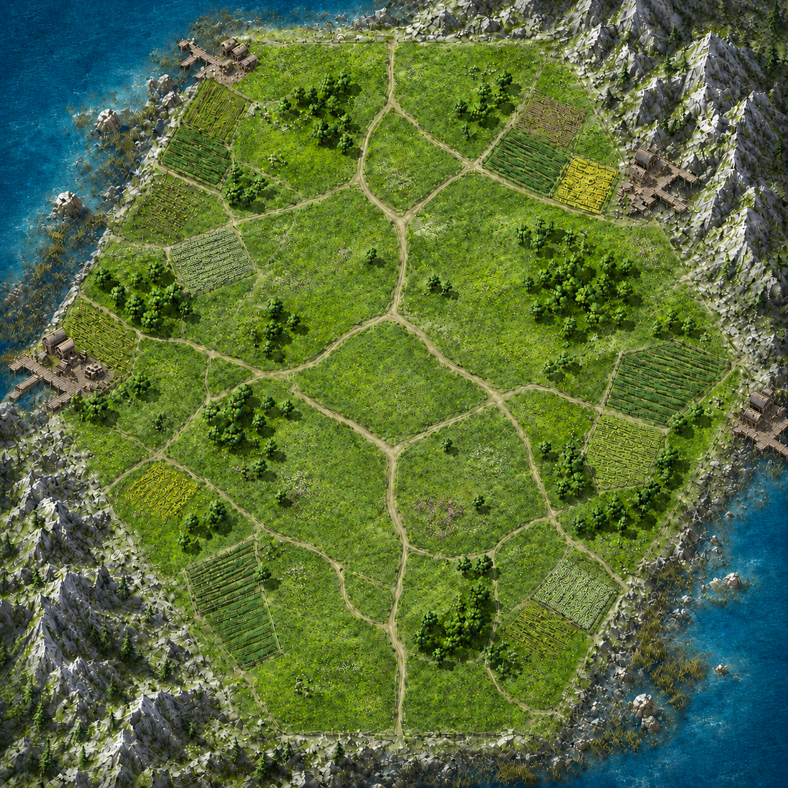

ⓘ Info
Duel of Conquerors
v0.6.6 · ventanas de dados desplazadas
Edificios adquiridos
Unidades en dominio
Recursos
Inicio de partida
Pulsa para iniciar la partida.
Sistema listo. Lanza los dados para iniciar.

Tarjeta de edificio
Haz clic en un edificio especial del tablero.
Ejemplo funcional: A1 · Puerto del Norte.